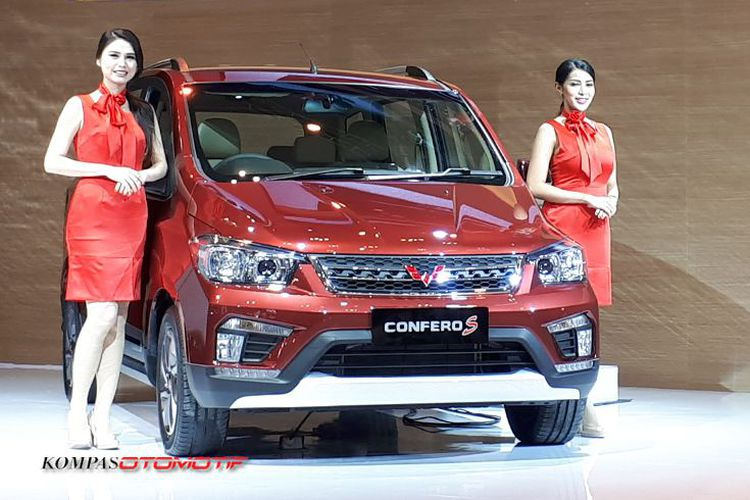

Diam Tapi Pasti, Wuling Kantongi Ribuan SPK
STANLY RAVEL
KabarKabur.com - 27/09/2017, 10:01 WIB

Wuling Motors di GIIAS 2017
KabarKabur.com - Perlahan tapi pasti Wuling Motors ternyata sudah menuai hasil signifikan. Sejak keran pemesaan dibuka Juli 2017 lalu, kedua varian, Confero dan Confero S, langsung mendapat sambutan positif.
Brand Manager Wuling Motors Dian Asmahani, mengatakan jumlah surat pemesanan kendaraan (SPK) Wuling sudah mencapai ribuan unit.
"Angka pasti per hari ini saya tidak tahu pasti, tapi bila dari awal September kemarin jumlahnya sudah di atas 2.000 unit dari semua varian," ucap Dian saat dihubungi KompasOtomotif, Rabu (27/9/2017).
Menurut Dian, pencapaian tersebut belum termasuk dengan angka saat pameran otomotif di Surabaya beberapa waktu lalu. Namun bicara soal ekspektasi, angka 2.000 unit lebih dianggap sebagai hasil positif bagi sebuah produk baru.
"Jujur secara target kami tidak ada untuk tahun ini, karena fokus kami lebih ke pengenalan produk dan peningkatan jaringan. Namun melihat dari angka tersebut cukup membuat kami sedikit kaget, ternyata penerimaan dari masyarakat sangat baik," kata Dian.
Dari sisi model, Dian mengatakan paling dominan dikuasai oleh Confero S tipe L yang ditawarkan dalam tida pilihan, yakni Confero S 1.5 L, Confero S 1.5 L Semi-Leather, dan Confero S 1.5L yang dilengkapi dengan Captain Seat.
penulis :Stanly Ravel
Editor :Agung Kurniawan